Table of Contents
Wherein feature engineering is rescued from the wilds of semi-empiricism and restored to the bosom of pure mathematics. A summary, additional context, and bonus nonsense for [1].
1 Introduction
- I'll be reviewing Higgins, et al. [1], a neat paper from 2018 which makes connections between deep learning and group actions. The HSP generalizes to finding stabilizers, so this may be a good place to look for applications.
- Since the formalism in both cases is very simple, I'll start with some broader context, trying to get at a basic question: what the heck should we learn?
2 Representation learning
- Bengio et al.'s review of representation learning [3] is one of the most cited papers in machine learning. It defines representation learning, its philosophy and goals, and some concrete model-building heuristics, including "generic" priors which, it is hoped, lead to "good" representations. One of these generic priors is that the representation should disentangle factors of variation. I'll talk about this shortly
- We can think of a representation, broadly speaking, as some way of pre-processing raw data (\(X\) below) into a new feature space (denoted \(F\)) to help train a model (perhaps involving supervised learning with an output space \(Y\)). Put differently, we would like to perform unsupervised feature learning on the raw data, and use these features downstream. We want to automate feature engineering!
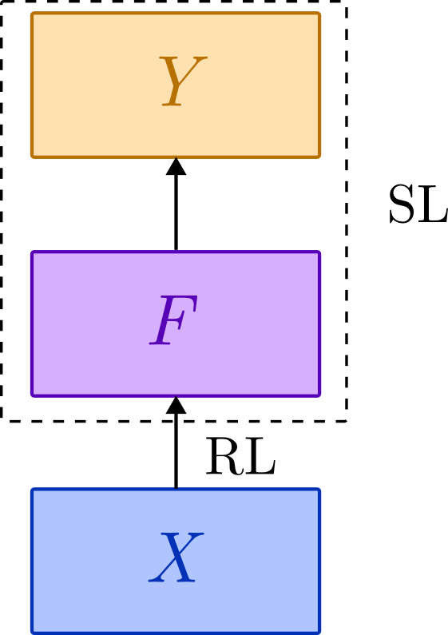
2.1 Generic priors
- What are some good ways to approach this? Well, it's hard to say a priori. We have no alternative but to go out into the world and gather some "semi-empirical" observations about natural data-generating processes! We then use these to inform generic, task-independent meta-heuristics about what sort of structures are useful. It's some kind of meta-learning process!
- Here are some of the priors suggested by Bengio and friends:
- Smoothness. The functions we learn are smoothly approximable. Or, to paraphrase
Carl Bender, the functions are not out to get us. Nature is lazy
and smoothness is easier!
- Distribution. There are multiple factors, that
can be independently varied. The model is
"hinged".
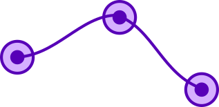
- Hierarchy. Explanatory factors have a global hierarchy. This
presumably underlies the success of deep learning!
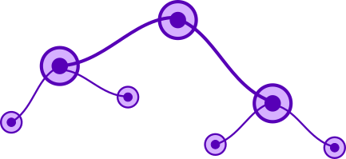
- Simplicity. Although there is a global hierarchy, local
relations in the hierarchy are simple, e.g. linear.
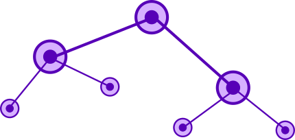
- Sparsity. For a given observation, only a small number of
factors is relevant.
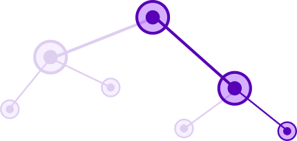
- Manifolds. Distributions tend to concentrate on low-dimensional
submanifolds of the original data space. Different values of
categorical variables lie on different submanifolds, with low
measure overlaps.
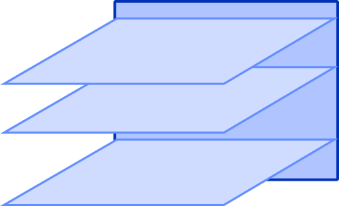
- Coherence. (Temporally) consecutive or (spatially) adjacent
observations tend to vary slowly on the appropriate categorical
submanifold.
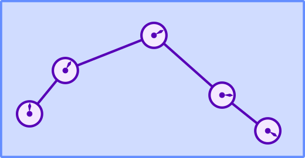
- Semi-supervision. Representations that help to explain the (unsupervised) input
distribution, \(p(x)\), tend to be useful for learning a
(supervised) output distribution \(p(y|x)\) or associated task,
e.g. transfer learning. Simply put, features share structure with
outputs.
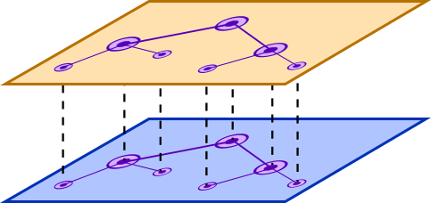
- Smoothness. The functions we learn are smoothly approximable. Or, to paraphrase
Carl Bender, the functions are not out to get us. Nature is lazy
and smoothness is easier!
2.2 The curse of dimensionality
- These assumptions can basically be divided into a local regularity conditions (smoothness, simplicity, coherence) and global structure (distribution, hierarchy, sparsity, semi-supervision). The manifold condition is both, since it tells us it tells us embeddings are locally smooth, but globally high codimension and approximately disjoint for different values of a categorical variable.
- Global assumptions show their worth when we consider the curse of
dimensionality.
Some learning methods are based only on smoothness. We pick a nice
family of target functions, and our
job is to use "examples to explicitly map out the wrinkles". We
collect local bumps via training and smoothly interpolate between them.
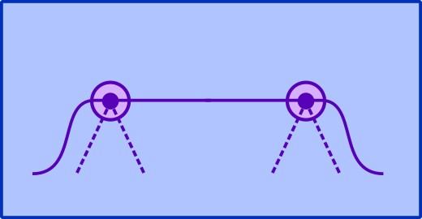
- The problem with this type of local generalization is that,
if we work in the raw input space \(X\), the number of possible bumps
can grow exponentially with the dimension of the data. For instance, for
\(n\) binary categorical features, if we work at the level of raw
strings we have an exponentially large hypercube of bumps to map out. Snaking around it linearly will require \(O(2^n)\) features.
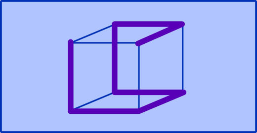
- The same lesson applies to kernel methods, where we
usually pick a kernel a priori (equivalent to a local smoothness
assumption) and then train it by solving some optimization problem
to interpolate between examples. Indeed, kernel methods, traditional
clustering algorithms, Gaussian mixtures, nearest neighbours, etc,
are all a form of one-hot encoding, a maximally sparse
representation with a totally flat/local feature hierarchy. As a
binary representation, it places a single \(1\) at the
bump location, and \(0\) elsewhere.
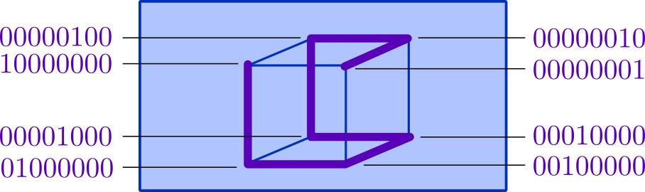
- Clearly, this description of the cube can be
compressed at the cost of some sparseness. If we learn the
dimensions of the hypercube instead of traversing the vertices, we
need only \(O(n)\) features. This is expressive and distributed in the
sense given above. If we would like to sparsify our features, we can
learn lower-dimensional features, e.g. faces or
edges. Separate subcubes are one-hot indexed, but within the subcube
we use binary.
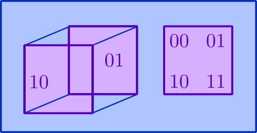
- That said, local generalization methods aren't useless. They are maximally sparse, analytically tractable, and have other nice properties. In fact, we can combine them with representation learning! An important example is kernel methods, where instead of picking a kernel a priori, we learn the kernel, i.e. use the learned representation \(F\) as the feature space, and then perform our supervised learning task. This is an example of semi-supervision.
2.3 Invariance and disentanglement
- It would be nice to take these high-level intuitions and make them formal. A
good place to start is the notion of invariance. The idea is that,
if we have a hierarchical representation, abstract features at a
high level should be invariant to perturbations lower down. A cat is
still a cat even if it's missing some whiskers.
- We can imagine categorical submanifolds as splitting into
lower-dimensional sections. Perturbations may bump us off that
section, but not out of the ambient categorical manifold. A
cat without whiskers is not a dog.
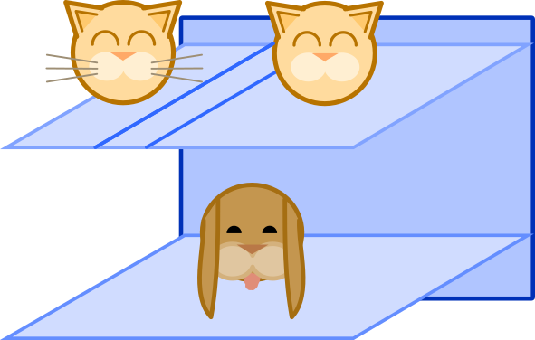
- More generally, invariant features are features with "reduced
sensitivity in the direction of invariance", for instance, along a
categorical manifold (blue directions) rather than away from it (red
direction).
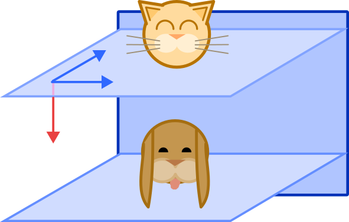
- I'm leaning a bit heavily on intuitions about categorical manifolds;
just imagine that instead of separate submanifolds, we have level
sets of a continuous function. It's a limit of the categorical case.
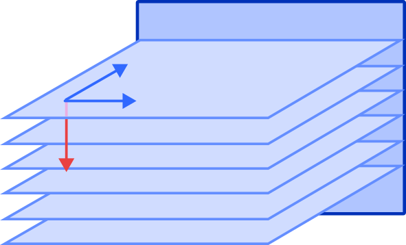
- The other thing I haven't explained is "sensitivity". This is a
task-specific notion, so that "invariant" really means "doesn't
affect models trained to do X". Whiskers might not affect the task
of distinguishing cats and dogs, but they do affect the task of
distinguishing pets with and without supplementary facial hair.
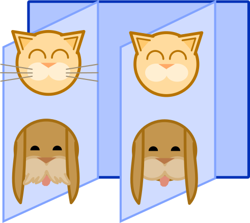
- If invariance is task-dependent, how can we learn invariant features
without supervision? We can't! Instead, we have to get a
handle on the distribution from the data itself, i.e. using
variation. We may not know about cats and dogs, but we might see
these submanifold-approximate clusters, or gradients in the smoothed
density of data points which are flat in some directions and not
others.
It's then natural to seek features which correspond to, and separate, factors of variation. This
is called a disentangled representation.
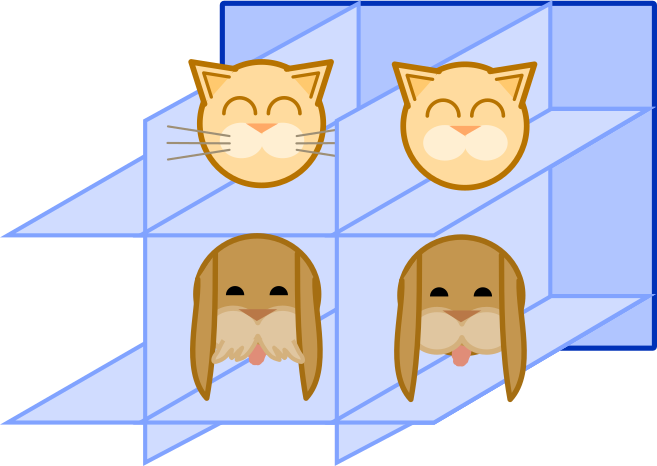
- Before moving on, note that this is a bit like PCA, which looks for factors of variation
(directions of variance) and separates them (directions are
orthogonal). For representation learning we don't expect to have a
global linear structure. We will need something like "local
PCA". I'll return to this below.
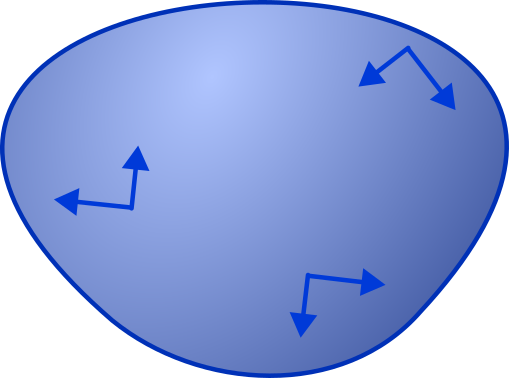
3 Disentangled representations
- However, instead of geometry, we're going to go down the path of algebra! The basic, clever observation is that disentangled representations are a special case of invariance, since factors should be invariant with respect to changes of the other factors. They are invariant features of the distribution itself.
- The word "invariant" should immediately conjure other words like "symmetry" and "group", namely the transformations our data is invariant to. The goal of [1] is to formalize the notion of a disentangled representation using groups.
3.1 Group actions
- To start off, recall that a group \(G\) acts on a set \(X\) when element \(a \in G\) is a permutation (i.e. bijection) \(\varphi_a: X \to X\) such that the permutation of a product \(ab\) is the product of permutations: \[ \varphi_{ab} = \varphi_a \circ \varphi_{b}. \] This is a homomorphism \(\varphi: G \to S_X\), where \(S_X\) is the group of permutations of \(X\) under composition. Visually, \(\varphi\) maps a "multiplication triangle" in \(G\) to a "composition triangle" in \(X\) (or \(S_X\)).
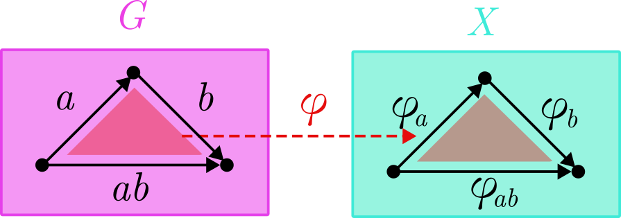
- We also need to take products of groups. If \(G = G_1 \times G_2 \times \cdots \times G_n\), we turn \(G\) into a group by multiplying "vectors" of group elements coordinate-wise: \[ (a_1, a_2, \ldots, a_n) \cdot (b_1, b_2, \ldots, b_n) = (a_1\cdot b_1, \ldots, a_n \cdot b_n), \] for \((a_1, \ldots, a_n), (b_1, \ldots, b_n) \in G\). Visually, a multiplication triangle of vectors splits into a vector of triangles.
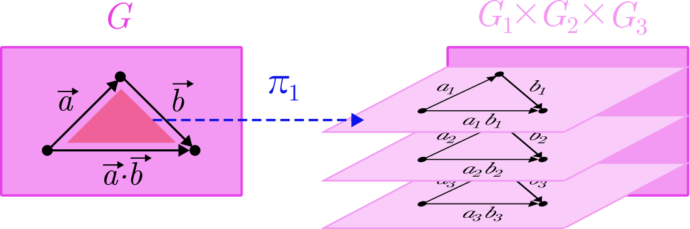
- We can also define a projection map \(\pi_i: G \to G_i\). This mapping of triangles means \(\pi\) commutes with multiplication, in the sense that \[ \pi(\vec{a} \cdot \vec{b}) = \pi(\vec{a}) \cdot \pi(\vec{b}). \] We can either perform multiplication then project, or project and then multiply.
- If each factor group \(G_i\) acts on a set \(X_i\), then the product of the groups \(G\) acts on the Cartesian product of the sets, \(X = X_1 \times \cdots \times X_n\). Put simply, the permutation of a vector is a vector of permutations: \[ \varphi_{(a_1, \ldots, a_n)} = (\varphi_{a_1}, \ldots, \varphi_{a_n}). \] We'll call such a group action disentangled. Visually, a vector of mulitiplication triangles gets mapped to a vector of composition triangles.
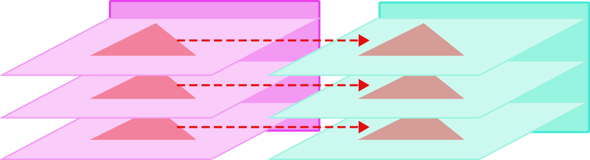
- In fact, if we want to be fancy, we can capture the factorization property and the group action property in one diagram. Loosely, the projection \(\pi\) and group action \(\varphi\) commute, so we we can draw them as a commutative diagram, where maps are arrows, domain/range are vertices, and composition is path-independent:
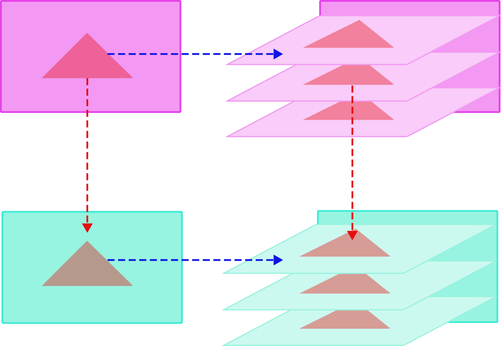
- The last notion we need is that of equivariance. Suppose that \(G\) acts on \(X\) and \(Y\). A function \(f: X \to Y\) is \(G\)-equivariant if, for all \(a \in G\), \[ f \circ \varphi_a^{(X)} = \varphi_a^{(Y)} \circ f. \] With some mild abuse of notation, we can simply say \(\varphi\) and \(f\) commute. As a commutative diagram:
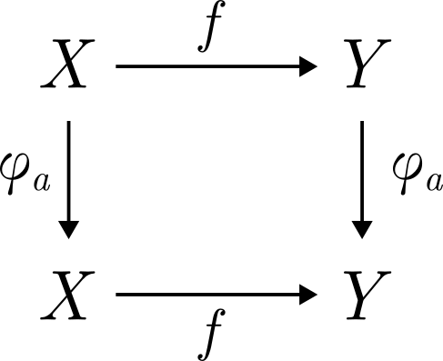
- When our set is a vector space \(V\), we can choose our group action \(\varphi: G \to \mathrm{GL}(V)\) to assign group elements to invertible matrices. A disentangled action is defined in a similar way, except that we use the direct sum notation \(V = V_1 \oplus \cdots \oplus V_n\). In this case, the action is called a representation.
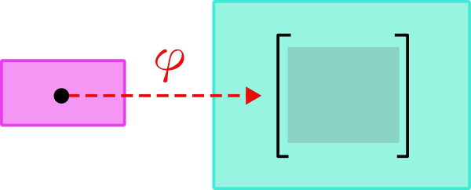
3.2 Inheriting symmetries
- A disentangled group action is not quite enough to define a disentangled representation. The problem is that the group can act on multiple things: the world itself (underlying the data distribution), the data, or the features. In fact, we want our features to inherit or learn the symmetries of the world! But it is constrained to go through the data.
- Let \(W\) denote states of the world. Different states correspond to different data distributions, \(p(x|w) = p_w(x)\), for a state \(w \in W\) and datum \(x \in X\). We'll also suppose that \(G\) is a set of symmetries of \(W\) that factorizes, \(G = G_1 \times \cdots \times G_n\).
- Note that we don't require the world \(W\) to be carved into neat factors on which \(G\) acts in a disentangled way. This is an important point! The world is typically messy and entangled, so our goal is not to model the world per se, but the explanatory factors underlying it.
- Now, suppose we gather enough data to learn \(p_w\). A representation maps this distribution (or equivalently, \(p_w\)) to a point in our feature space \(F\). Let's call this representation process \(\mathcal{R}: W \to F\).
- Then \(\mathcal{R}\) is a disentangled representation if
- our feature space \(F = F_1 \times \cdots \times F_n\) carries a disentangled action of \(G\), and
- it is \(G\)-equivariant, \(\mathcal{R} \circ \varphi = \varphi \circ \mathcal{R}\).
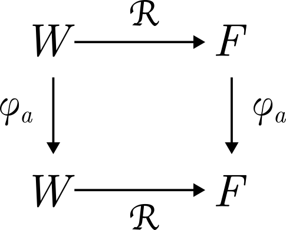
- If \(F = F_1 \oplus \cdots \oplus F_n\) is a vector space, and \(\varphi: G
\to F\) is a representation, then
\(\mathcal{R}\) is a linearly disentangled representation under the
same conditions, i.e.
- \(G\) acts in a disentangled manner on \(F\), \[ \varphi(a_1, \ldots, a_n) = (\varphi_1(a_1), \cdots, \varphi_n(a_n)), \] where \(\varphi_i(a_i)\) is a representation of \(F_i\), and
- \(\mathcal{R}\) is \(G\)-equivariant.
- That's it for the formal definition! To illustrate, there is a toy example, using a variational autoencoder on a coloured donut. It makes a sequence of single pixel observations, top left. These are used to train some latent factors \(z_1, z_2, z_3\), whose traversals (vary one, fix others) are pictured top right. The bottom shows how world states get mapped to features in an equivariant way.
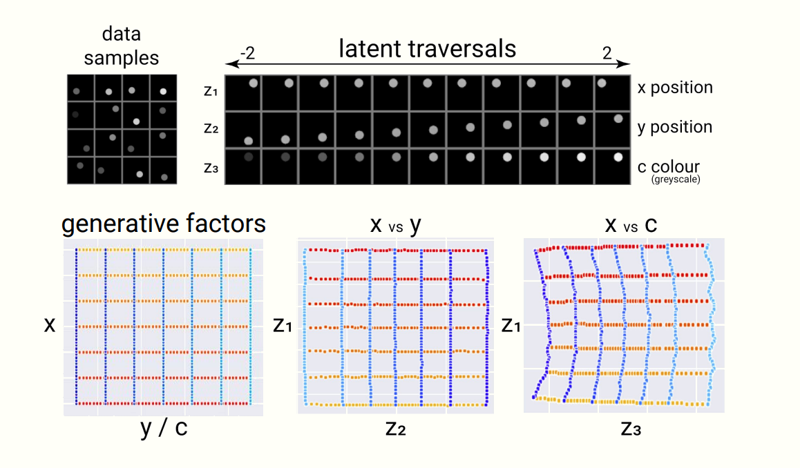
- In fact, they use a variant of the vanilla VAE called the \(\beta\)-VAE, where \(\beta\) is a hyperparameter which reweights the KL divergence in the loss function. We can view \(\beta\) from the information bottleneck perspective as penalizing shared information between factors, so higher values lead to higher disentanglement! It's cool, but beyound our scope. See [4] for details.
3.3 Quantum disentanglement
- Amusingly, this overlaps a recent quantum information paper on entanglement [2]; the relevant notions of "disentanglement" are suprisingly similar.
- Usually, entanglement is a number, for instance von Neumann entropy, Schmidt number, distillable entanglement, etc. The insight of [2] is that we can directly define an entanglement group associated to the state. This captures the operational power of entanglement in a direct way.
- Consider a multipartite Hilbert space, \[ \mathcal{H} = \mathcal{H}_1 \otimes \cdots \otimes \mathcal{H}_n. \] A state \(|\psi\rangle \in \mathcal{H}\) is entangled when operations on one tensor factor affect another tensor factor; operations on one factor can therefore be undone on another. This is the algebraic version of "spooky action at a distance".
- More formally, note that the product group \[ \mathrm{U}(\mathcal{H}) = \mathrm{U}(\mathcal{H}_1) \]
4 References
- "Towards a Definition of Disentangled Representations" (2018). Higgins, Amos, Pfau, Racaniere, Matthey, Rezende, and Lerchner.
- "Multipartite entanglement groups" (2023). Jiang, Kabat, Lifschytz, and Marthandan.
- "Representation Learning: A Review and New Perspectives" (2014). Bengio, Courville and Vincent.
- "Understanding disentangling in β-VAE" (2018), Burgess, Higgins, Pal, Matthey, Watters, Desjardins, Lerchner.